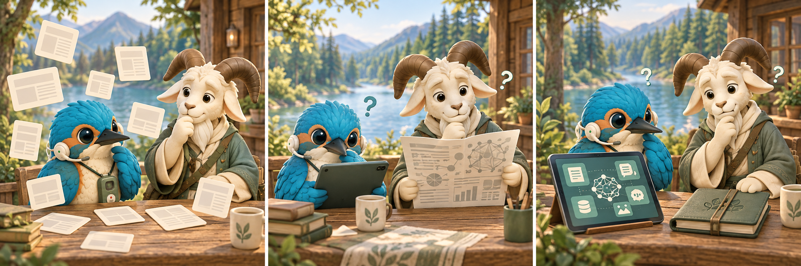
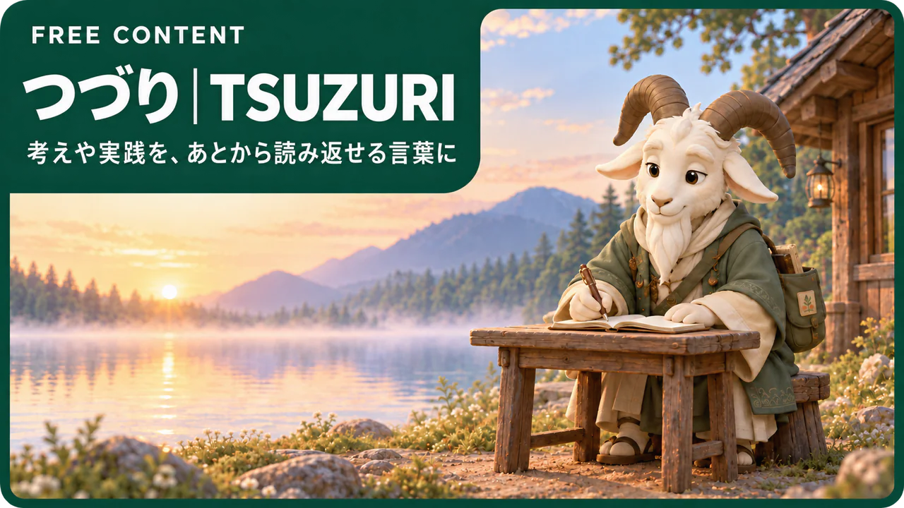
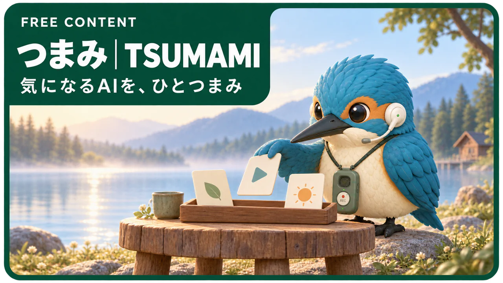
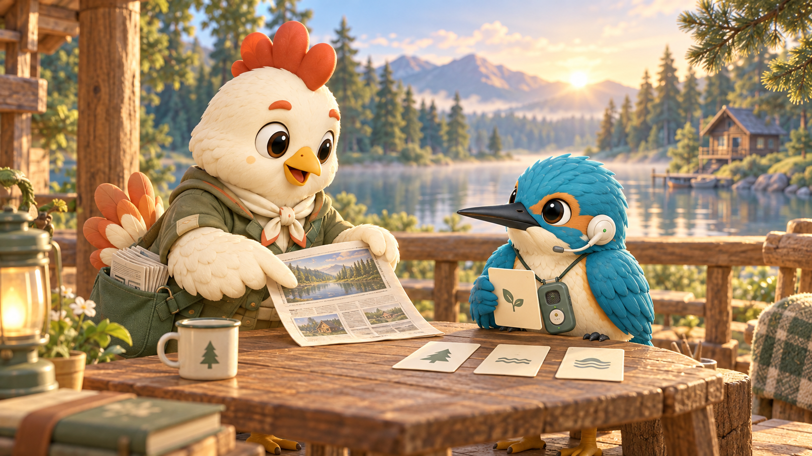

こんなときの入口に
AIは気になる。
でも、どこから知ればいい？

情報が多くて、
選べない。
説明を追っても、
つかめない。
自分の仕事との接点が、
見えない。
まずはひとつ。理解しやすい形で、知るところから。
あなたに合う学び方
テキストで知りたい？
動画で知りたい？

無料コラム / つづり
ことばで、じっくり。
自分のペースで理解する。
AIの話題や専門職の働き方を、読みやすい記事で。背景を知りたいとき、考えながら読みたいときに。
背景を読む
立ち止まる
読み返す
知識や実践を、自分のことばで整理するきっかけに。
無料のコラムを読む →
無料動画・資料 / つまみ
見て、なるほど。
使う場面が見えてくる。
AIの話題や使い方を、短い動画や資料で。文字だけではつかみにくい画面や流れを、見ながら知りたいときに。
動きを見る
止めて確認
見返す
気になるテーマをひとつ選び、使い方のイメージをつかむ。
無料の動画・資料を見る →公開しているコラム・動画・資料は無料。気になるテーマから、ご活用ください。

無料の入口から、次の一歩へ
知るところから。
仕事での「試してみたい」へ。
つづり・つまみは、AIを理解するための無料の入口。
さらに仕事でどう使うか考えたい方へ、TAYORIがあります。
つづり・つまみ気になるテーマを、読む・見るで理解する。
TAYORI重要な話題・解説・会員Q&Aで、次に試すことを考える。